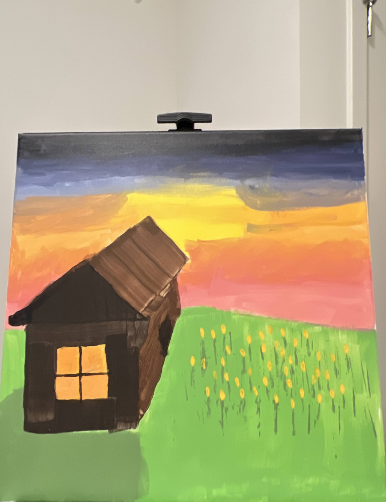
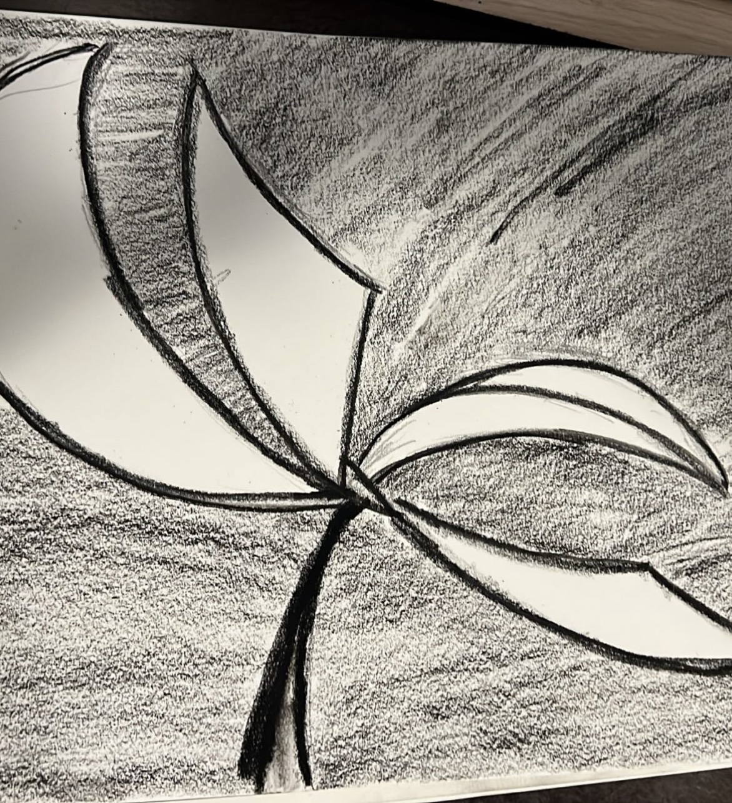
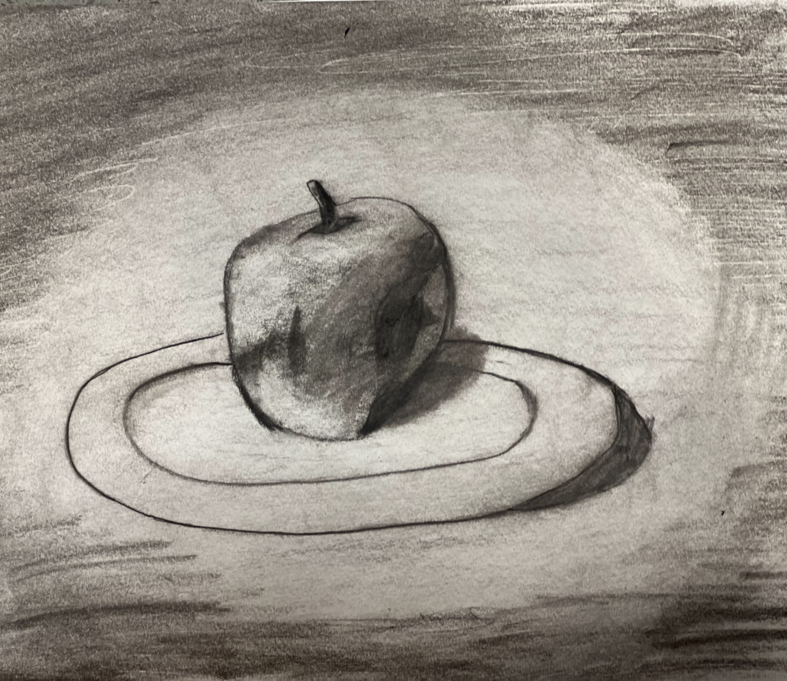
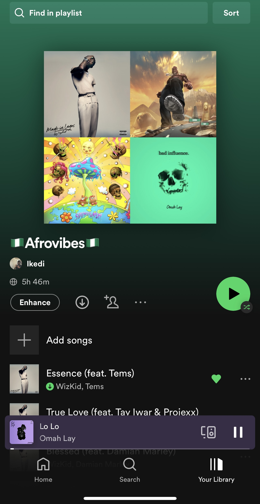

Paint
I just recently got into painting. I was inspired by the art on the walls in museums and galleries, but I have never had the chance to try it for myself. I decided to take my first steps by painting a small wooden box. It was a lot of fun, and I am excited to keep learning more about this amazing art form. I am very new to painting but these are my first two pieces, hope you like them!

Draw
I love to draw. I have been drawing since I was a child. I love how I can express myself in art and share that with others. I love the way I can use simple shapes and lines to create something that is beautiful. I stopped for a while now I have picked up a variety of new art styles like charcoal and ink drawings. Below are some of my favorite drawings.
 Bodybuild
I am an aspiring bodybuilder. I got into the sport around the age of 13, I saw a friend of mine that was in good shape for his age and asked him how he did it. I learned from him and then went home to watch youtube videos learning about what exercises I should do from home since I was too young to go to a regular gym. Most of my knowledge on the body I contribute to youtube and the anatomy books my parents bought me growing up. I feel like they gave me the boost I needed. Now I work out with the intention of one day reaching that bodybuilder physique.
Music
I have a great love for music. I listen to it, I learn from it, and I deeply appreciate it. Every single piece of music is beautiful, and I can never tire of hearing it. My listening preferences are Hip-Hop, Afrobeats, Lofi, and R&B. Here are two of my favorite playlists I made over the years.

Game
GAMES ARE FUN! They are a great outlet for my creativity and offer many different types of challenges. When I was younger, I enjoyed playing games most of all, and I loved all types of games, but lately, my favorite games have been strategy games.
Learning Cars
I like learning about cars. My dad taught me about the different types of vehicles and their uses. I like looking at old photographs and reading books about the history of transportation. It is interesting to learn about how our society has changed over time. I have gotten into buying car parts and being my own mechanic. I do not do major jobs since I am still new to learning all this but I like to do the basic maintenance of my car myself and my parents car whenever I am at their home.